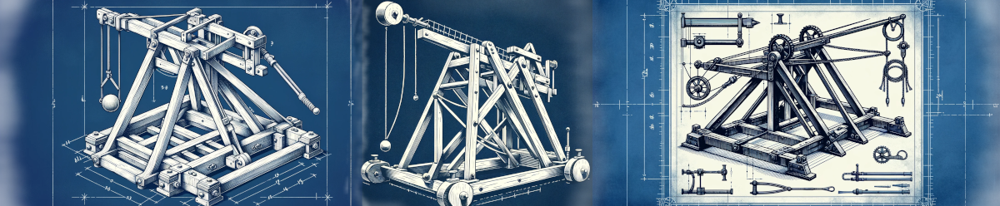
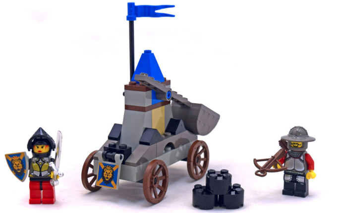

LEGO Robotics Catapult Lab

Overview
In this lab students will work in teams to design a mechanical catapult using LEGO Spike Prime robotics kits. The catapult must be capable of launching a LEGO mini figure. Designs/builds will be evaluated based on distance and accuracy, but other criteria will be specified by the participants.
Time
90 minutes
Goals
This lab is designed as a first introduction to building and programming LEGO robotics. By the end of the lab, students will be able to:
- build a LEGO robot
- program the touch sensor
- program the large motor
- evaluate a build for strength and stability
- implement an iterative design process
In addition to these technical skills, students will:
- identify ways that LEGO robotics can connect to other academic disciplines
- “re-enact” Constructionist activities to gain insight into this approach
- reflect on the role of play in learning
- reflect on the team dynamics in the design lab
Prior activities
Prior to the lab, the students are familiar with the goals of the lab, and have been organized into teams of 3 or 4 students. They have read about maker and constructionist education, and are familiar with the ways that LEGO robotics have been used in classroom instruction.
Materials
- LEGO Spike Prime robotics kits (1 kit per team)
- LEGO mini figure (1 per team)
- tape measure
- extra LEGO bricks / gears / axles / etc.
Procedure
- Demo (10 min). Instructor demonstrates a very basic catapult build and programs it to launch a ball. The goal is to show an overview of how the LEGO IDE works, and how to connect the brick to the computer. Link to the “code” so that teams can start with that as their base. Teams are instructed to document their work with screen shots, photos, and video.
- Build 1 (20 min). Teams build a basic catapult. The instructor
makes sure that each team can connect to their brick and knows
how to start the program. With 5 minutes left, each team will demonstrate
their catapult. They will be given three launches per team. The instructor
measures the distance and records each teams score on a whiteboard or
shared digital display. Teams are encouraged to divide their labor
so that everyone is engaged. Possible divisions include:
- team leader / project manager / documentarian
- researcher / designer
- programmer
- engineer / builder (2 people can share this role)
- Reflection (5 min). The whole class discusses the project so far.
They will discuss whether any additional materials are needed, codify
any rules for the “competition” (does it have to be “catapult” or
can a trebuchet, canon, or other construction be used?),
and decide on how launches should best be measured – does accuracy
matter? does the projectile need to clear a certain height?.
The instructor will provide feedback and suggestions on each build to the whole class (in the style of a studio critique or code review). - Build 2 (40 min). Teams build a second version of their catapult. They are encouraged to test often, and to divide work.
- Competition (15 min). Teams will have three launches. The instructor will measure the distance (according to the rules devised by the students) and record the scores. After the results are in, group discusses the lab in terms of the stated goals above.

Continuation
After the lab, each student will add a page to their digital portfolio where they reflect more deeply on the project. They wll include relevant media from the lab (photos, videos, screen shots, etc.). They should explicitly reflect on:
- the overall experience in the lab
- how the lab could be improved
- how the lab related to course readings and prior readings regarding Constructionism and maker education
- extensions of the lab into their own teaching
Resources
- LEGO Spike Prime. Web based IDE.
- Prime Lessons